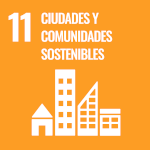

El Departamento de Umbrología: un proyecto para repensar las ciudades desde la protección de las sombras
Juan F. Samaniego y Sònia Armengou / 21 de enero de 2026
5 min.

Contra el calor extremo, sombras. De los árboles a los refugios climáticos, pasando por los toldos o las sombrillas, las sociedades urbanas buscan hoy soluciones para adaptarse a los peores impactos del cambio climático: la Organización Mundial de la Salud estima que cerca de medio millón de personas mueren cada año a causa de complicaciones de salud relacionadas con las altas temperaturas y que cientos de millones sufren bajo el calor extremo.
¿Y si nunca fuimos seres solares? ¿Y si para reaprender a vivir en las ciudades de hoy necesitáramos desplazar del centro el poder salvaje del sol, poniéndonos a la sombra? Esta es la hipótesis central con la que trabaja el nuevo Departamento de Umbrología, una entidad especulativa para el estudio y la intervención de la vida urbana de las sombras que se presenta el próximo 26 de enero a las 10 de la mañana en la sala de actos de la Fabra i Coats: Fàbrica de Creació, en Barcelona. Al frente, el antropólogo Tomás Criado, investigador sénior Ramón y Cajal del grupo CareNet y profesor del máster universitario de Filosofía para los Retos Contemporáneos de la Universitat Oberta de Catalunya.
"Esa apreciación regularmente positiva del sol en la ciudad necesita hoy de un contrapunto: ¿qué hacer cuando nos daña o nos pone en riesgo, como en las condiciones atmosféricas de calor extremo, o en la exposición que conduce al melanoma? A la peculiar solaridad moderna, encarnación urbana del sueño ilustrado de visibilidad total, parece costarle tratar sin prejuicios todo lo que queda fuera de esas irradiaciones", reflexiona Criado. Para romper ese bloqueo aparente, el Departamento de Umbrología impulsará talleres, seminarios y juegos durante los próximos dos años, y celebrará un Festival de las Sombras en 2027.
¿Necesitamos más sombras en nuestras ciudades?
La sombra ha sido siempre sinónimo de frescor y de descanso, de refugio, de bienestar. Pero hoy también puede significar acción climática colectiva e inclusiva. "La ausencia de sombra visibiliza desigualdades: personas mayores que sufren aislamiento fatal durante las olas de calor, trabajadores racializados expuestos al sol, cuerpos vulnerables fuera del diseño urbano", explica Tomás Criado. "El calor extremo y otras mutaciones climáticas actuales han abocado a las ciudades del presente a la mayor crisis de diseño a la que se han enfrentado en los últimos siglos. Esta transformación y los graves efectos de desigualdad que comporta exigen una profunda transformación de nuestras instituciones conceptuales y políticas".
El calentamiento de las ciudades es uno de los grandes retos del presente, objeto de atención creciente desde las ciencias ambientales, la arquitectura bioclimática, la epidemiología, las humanidades y las artes. La temperatura media de Barcelona, por ejemplo, es hoy más de 1,5 grados Celsius superior a la de la era preindustrial y la frecuencia de las olas de calor en la ciudad se ha incrementado, de una cada cuatro años a cinco olas entre el 2022 y el 2024, según datos del Ayuntamiento de Barcelona. "El urbanismo solar del siglo XIX colocó el sol en el centro de la planificación, y derribó barrios densos y oscuros en nombre de la luz y la salud pública. Pero hoy el sol también puede dañarnos. Por eso, proponemos reaprender a vivir en la sombra", añade el investigador de la UOC.
El Departamento de Umbrología nace también con la premisa de que la sombra no lo puede todo, que debe ser parte de una gran transformación climática colectiva que aborde nuestros usos energéticos y nuestros modos de construir edificios y ciudades, una transformación que debe ir acompañada del fortalecimiento de nuestras instituciones democráticas, huyendo de las imposiciones tecnocráticas y buscando no dejar a nadie fuera de la ecuación.
Vamos a necesitar los saberes y las manos de todo el mundo para enfrentar los retos que se nos vienen encima. La sombra tiene algo interesante para ello: es algo tan mundano que todo el mundo es capaz de entender su relevancia.— Tomás Criado
Cambio climático: ¿Pueden las sombras urbanas ayudar a salvar vidas?
Un departamento de las sombras
Lo que comenzó a tomar forma en 2024 como parte de un taller de una semana para las Semanas de la Arquitectura de la ciudad de Barcelona ha acabado convirtiéndose en algo mucho más ambicioso. El Departamento de Umbrología es un proyecto transdisciplinar (financiado por la Fundación Daniel y Nina Carasso) que comenzó el 1 de diciembre de 2025 y se prolongará hasta el 30 de noviembre de 2027. Articula a cuatro socios de la ciudad de Barcelona en la encrucijada de las humanidades, la arquitectura, las artes y las ciencias ambientales: los grupos CareNet y DARTS, adscritos al Centro de Investigación Interdisciplinario en Transformaciones Sociales y Culturales (UOC-TRÀNSIC) de la UOC, el colectivo Arquitectura de Contacte, las ambientólogas y divulgadoras científicas de Nusos Coop y los artistas especulativos del Laboratorio de Pensamiento Lúdico.
El nombre de este proyecto nace de la ficción, ya que está inspirado en el departamento universitario que imaginó el escritor estadounidense Tim Horvath en su historia corta The Discipline of Shadows. "Pero más allá del nombre, nuestro juego con la ficción es otro, relativo a la crisis de imaginación política de un presente acuciado por diversas crisis abismales", señala Tomás Criado. "El mundo no está solo en crisis, sino también ante una profunda mutación irreversible, lo que nos debería obligar a imaginar otras formas de vida, así como nuevas instituciones para la vida común que pongan en el centro la pregunta de cómo habitar, de formas plurales y particularmente no modernas, la catástrofe planetaria".
Por eso, a través de seminarios de ciencias, arquitectura y artes, actividades de sensibilización, talleres de cocreación de arquitecturas de sombra, instalaciones para explorar el significado de las sombras digitales o juegos especulativos, el Departamento de Umbrología nace con el cometido de revitalizar los saberes y las prácticas de las sombras para la habitabilidad de las ciudades en el Antropoceno, una nueva época marcada por el impacto humano sobre el sistema terrestre.
"La ciudad de las sombras trae consigo una nueva poética de la acción climática situada, un imaginario de la protección climática más tangible, hecha con nuestras propias manos. Ahí reside para mí su poder" , concluye Criado.
Frente a relatos globalizantes y de lo grande, ¿quizá en la sombra comunitaria resida una manera situada de proteger la innovación desde abajo y fomentar una cultura experimental del calor? En el Departamento de Umbrología nos gustaría proteger las acciones de consorcios emergentes frente a actores consolidados para pensar formas de vida más plurales y cambiantes para enfrentar los retos urbanos del presente y el futuro— Tomás Criado
El Departamento de Umbrología será presentado el próximo 26 de enero a las 10 de la mañana en la sala de actos de la Fabra i Coats, en Barcelona. Para más información sobre el proyecto, puedes consultar la web: umbrology.org.
El proyecto está enmarcado en las misiones de investigación de la UOC Transformación digital y sostenibilidad y Salud y bienestar planetario y contribuye a los objetivos de desarrollo sostenible de la ONU número 3, salud y bienestar, número 11, ciudades y comunidades sostenibles, y número 13, acción por el clima.

